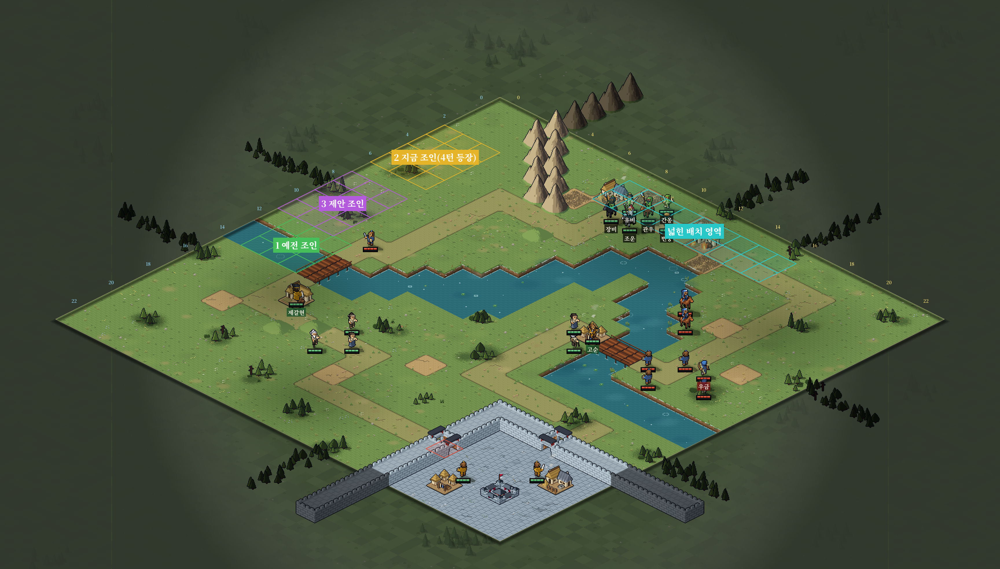

<title>서주 전투 조인 위치</title>
<meta name="claude:viewport-fit-sides" content="cover">
<style>
:root{--bg:#f3f4f2;--fg:#1d2124;--muted:#5d666c;--line:#d5d9d6;--c1:#3f9e5a;--c2:#c9952a;--c3:#9a4fc4;--c4:#2a9fae}
@media (prefers-color-scheme: dark){:root:not([data-theme="light"]){--bg:#15191c;--fg:#e4e8e6;--muted:#9aa4a9;--line:#323b40;color-scheme:dark}}
:root[data-theme="dark"]{--bg:#15191c;--fg:#e4e8e6;--muted:#9aa4a9;--line:#323b40;color-scheme:dark}
body{background:var(--bg);color:var(--fg);font:15px/1.7 "Apple SD Gothic Neo","Malgun Gothic",sans-serif;padding-block:28px 48px;padding-left:max(16px,env(safe-area-inset-left,0px));padding-right:max(16px,env(safe-area-inset-right,0px))}
main{max-width:980px;margin:0 auto;display:flex;flex-direction:column;gap:18px}
h1{font-size:1.5rem;margin:0}
img{width:100%;height:auto;border:1px solid var(--line)}
.wrap{overflow-x:auto}
table{border-collapse:collapse;width:100%;min-width:520px}
th,td{border-bottom:1px solid var(--line);padding:6px 8px;text-align:left;vertical-align:top}
th{color:var(--muted);font-size:.85rem}
.dot{display:inline-block;width:.8em;height:.8em;border-radius:2px;margin-right:6px;vertical-align:-1px}
p{margin:0;max-width:70ch}
</style>
<main>
  <h1>서주 전투 · 조인은 어디서 어디로</h1>
  
  <div class="wrap"><table>
    <tr><th>표시</th><th>자리</th><th>언제</th><th>어떻게 됐나</th></tr>
    <tr><td><span class="dot" style="background:var(--c1)"></span>1 예전 조인</td><td>(1~3, 12~14) 서쪽 다리 바로 위</td><td>처음부터 있음, 3턴에 출발</td><td>제갈현과 너무 가깝다고 하셔서 위로 올림</td></tr>
    <tr><td><span class="dot" style="background:var(--c2)"></span>2 지금 조인</td><td>(0~2, 3~6) 북쪽 꼭대기</td><td>4턴에 이벤트로 나타남</td><td>유비군 출발을 (9,2)로 옮기자 바로 옆이 됨. AI 시험에서 서쪽 길로 가던 유비군과 정면으로 부딪혀 6패</td></tr>
    <tr><td><span class="dot" style="background:var(--c3)"></span>3 제안 조인</td><td>(0~2, 8~11) 위쪽 띠 서쪽 끝</td><td>4턴에 이벤트로 나타남(그대로)</td><td>1과 2 사이. 유비군 출발에서 멀고, 서쪽 다리까지 1~2턴이라 제갈현은 4턴 뒤 2~3턴 안에 위험해짐</td></tr>
    <tr><td><span class="dot" style="background:var(--c4)"></span>넓힌 배치 영역</td><td>(8~16, 1~2)</td><td>시작</td><td>서쪽 끝에 두면 제갈현 길, 동쪽 끝에 두면 고순 길</td></tr>
  </table></div>
  <p>정리하면, 처음(1)은 서쪽 다리 위였고, 가깝다고 하셔서 북쪽 꼭대기(2)로 올렸습니다. 그런데 유비군 출발을 가운데로 옮기면서 2가 유비군과 붙어 버려서, 그 중간(3)을 제안했습니다. 4턴에 나타나는 이벤트 방식은 그대로입니다.</p>
</main>
